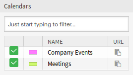

日历概览¶
使用此屏幕可以概览已添加的日历。 概览屏幕位于 日历 菜单的 日历概览 菜单项中。
注解
默认情况下没有添加日历，请与您的管理员联系以添加一个或多个日历。

没有找到日历
此概览与通常的日历一样工作。 可以选择不同的时间段和时间线来查看预约，并且可以在不同的时段之间跳转。

日历概览屏幕
选中或取消选中 日历 小部件中的复选框，以显示或隐藏特定日历中的预约。

日历小部件
若要在外部日历应用程序中查看这些预约：
- 单击 日历 小部件的最后一列中的 复制公共日历URL 图标，将URL复制到剪贴板。
- 打开外部日历应用程序。
- 将URL插入外部日历应用程序。
注解
如果系统中添加了多个日历，只需键入要过滤的名称，即可使用过滤器框查找特定日历。
在日历概览中，服务人员可以根据相关日历的权限级别显示、创建、编辑和/或删除不同日历的预约。 可以在此屏幕中通过拖放来创建或编辑此类预约。
若要添加一个新的预约：
- 点击左侧边栏中的 添加预约 按钮。
- 填写必填字段。
- 点击 保存 按钮。
参见
预约 对话框在 新建预约 章节中解释。

预约对话框
若要编辑一个预约：
- 在日历概览中点击一个预约。
- 修改字段。
- 点击 保存 按钮。

编辑预约对话框
若要复现一个预约：
- 在日历概览中点击一个预约。
- 点击 复制 按钮。
若要删除一个预约：
- 在日历概览中点击一个预约。
- 点击 删除 按钮。
- 点击确认对话框中的 确认 按钮。